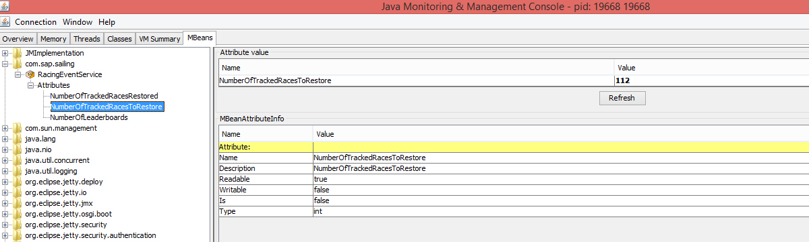
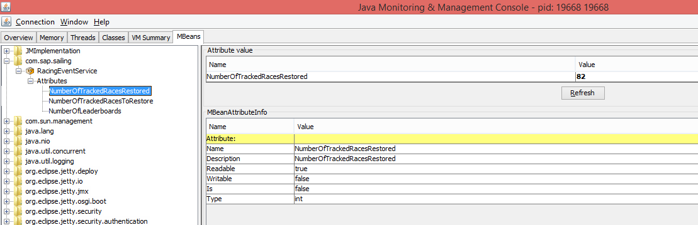

Release Notes - Administration Console
January 2019
- Allow entering a priority for courses managed in the AdminConsole. The new default priority now is 1. It used to be 0 which caused problems because the Race Manager app's highest (logically) priority is 1 which never took priority over the AdminConsole-provided prio-0 events.
- User sessions are now stored durably in the database so that they can be restored in case of a server re-start. Users therefore will no longer need to sign in again only because a server was re-started.
- New availability checks have been implemented. Two new REST endpoints are provided:
- /sailingserver/api/v1/status reports the availability of the "Sailing" application
- /replication/replication?action=STATUS reports the availability of the replication module, providing details about each replication-capable component and queue lengths
- the "status" script in the server's working directory, next to the "start" and "stop" script, now provides output based on the status checks above, plus a check for a 2XX response code for /index.html. The exit code for the "status" script is now 1 in case of an error / lack of availability, and 0 if all checks passed and server looks available.
October 2018
- Added progress indicator to device mappings panel for smartphone tracking.
September 2018
- Added automatic resizing when adding images to an event using the ImageDialog. It shows a check box if resizing is necessary, if you check it, the service will resize the image for you.
- Now showing an error when trying to upload an image or video to an event and no working FileStorageService is registered.
August 2018
- The mark passing editor now uses a full date/time format for the mark passing time points.
- The TracTrac connector panel no longer shows a password visibly but uses a password text field.
- The SwissTiming connector can now handle an "Update URL" together with username/password access credentials which are used, if present, to send feedback requests about start times, race status and course changes to that URL.
July 2018
- When adding a YouTube video for tracked races ("Manage Media" in RaceBoard.html or "Tracked Races > Audio & Video" in AdminConsole.html) the respective video metadata is now read using YouTube API v3. This functionality used to work some years ago using API v2 but was broken since this API version was discontinued some time ago. Due to limitations of the new API we can't read the start timepoint of videos by now. You still need to provide this value manually.
- In the "Tracked races" tab, within the eponymous section of the AdminConsole, the "Set start time received" dialog can be used to remove the currently set start time received, by simply leaving the value empty and confirming the dialog.
- Up to 15 discards can now be configured for series and leaderboards. This enables, e.g., "Wednesday Night" scenarios where over the season, say, 20 races are run but due to changing participation only, say, the five best ones shall be scored.
- There is a new scoring scheme available to be selected upon regatta creation.
The scoring scheme is named "Low Point System, First with two wins in medals is winner" and introduces the following specifics compared to the standard low point scheme:
- Medal series does not feature doubling of points in the medal series by default.
- A competitor having two wins in the medal series is treated as overall winner. If there is a carry forward column in the medal series, having one point there also counts as a win which means the best competitor in the qualification needs a win less than any other finalist to be the overall winner.
- If the medal series isn't started yet or no competitor has collected two wins, scoring by points is used. This also applies if the regatta is aborted (e.g. due to weather conditions) before any competitor could win two races in the medal series.
- If two competitors have the same amount of points in the medal series the tie breaking criteria is the carry forward column of the medal series. If there is no carry forward column in the medal series, the last medal race is used as tie breaking criteria. For any non-medal series, the standard low point rules apply.
- A TracAPI upgrade from version 3.10.1 to 3.11.0 unifies the handling of course updates and solves an issue observed with updating mark passing instructions.
- Bug fix for mark position editor, now providing consistent behavior during adding of new mark fixes
- Data Mining now more aggressively terminates running queries if needed.
June 2018
- Added the available WindFinder Spot Collections. The desired ones can be selected from the WindFinder Tab in the Event Dialog.
- Added the ability to change the url of multiple Mediatracks with a common prefix at once. This is useful e.g. for video migration scenarios when movin videaos from one server to another. This can be done from the adminconsole->tracked races->audio & videos tab
- In raceboard when you edit a video you do not need to explicitly press "Preview" before saving anymore. Saving now implicitly applies the changes.
- The URLs of our GWT services are extended to include a leaderboard name if a call is context sensitive to a specific leaderboard.
This does not affect the functionality of any service but allows us to setup load balancing with leaderboard specific routing.
The leaderboard names put into the URL are cleaned: Any character that isn't a latin upper/lowercase letter or digit is replaced with an underscore character.
Currently, the following leaderboard specific URLs are used:
- /gwt/service/sailing/leaderboard/[CLEANED-LEADERBOARD-NAME]
- /gwt/service/dispatch/leaderboard/[CLEANED-LEADERBOARD-NAME]
May 2018
- Added the ability to add multiple mp4 videos as mediatracks at once via the new multi video dialog, located at trackedraces -> Audio & Video. This features requires a webserver with index listing enabled. Additionally the dialog offers the ability to add the new mediatracks directly to all races overlapping the starttime and duration of the mediatrack.
- On the "Edit mark positions" panel within RaceBoard, now a "Clear selection" button appears when selecting a mark from the table, which provides an easier and more obvious way to deselect all marks, what is needed in order to see the full course with all marks again.
- The AutoPlay.html configuration "Sixty Inch" was improved for the usage with events that aren't part of an event series. While no race is live or scheduled, only the overall leaderboard used to be shown. In addition to this, also the regatta leaderboard is shown in an alternating order. For non series events there is no overall leaderboard which means, that only the regatta leaderboard is shown.
April 2018
- The import of additional expedition data was extended to read many additional measures. These can be visualized in the leaderboard as well as the competitor charts in RaceBoard.html. In addition, the leaderboard has been extended to provide bravo and expedition related measures consistently on race and leg level. The respective settings dialogs were changed as well to only show specific options, if bravo or expedition tracks are available. Any previously imported expedition tracks may be dropped and reimported to gain access to the newly introduced measures.
- The settings dialog of the competitor charts in RaceBoard.html now provides the measures in alphabetical order (based on the current locale). Expedition specific measures - if available - are shown at the end of the list.
- The all in one expedition import has been extended to be able to import new competitor tracks or new races to an existing regatta. Previously it was only possible to import a new event structure.
- The Expedition log file import now prefers "GPS Time" for time stamping over "Utc" and over other date / time formats, making it more consistent with the Expedition live connector which uses column 146 for time stamping which is GPS Time.
- Two dimensional metrics can now be displayed by using a scatter plot presenter within the data mining tool. Select a metric that returns a pair of numbers and choose "Average" or "Identity" as an aggregator.
- Replication was made more robust for fixes that are delivered and applied asynchronously. If a race was removed while still in tracking mode, fix-related operations may have been queued already on the replica when the tracked race is removed. The pending GPS fix operations then would have clogged the executor threads until the entire replica comes to a halt. With the change, race-related asynchronous operations will simply be dropped when the race to which they pertain is not found on the replica.
- When editing mark positions, all fixes are now displayed, including potential outliers.
March 2018
- Boats are now separate entities. See the "Tracked Races / Boats" tab in the admin console. When creating a regatta, you now need to specify whether in that regatta the competitors may sail on changing boats ("Can boats of competitors change per race"). If boats can change, boat assignments need to be specified per race. For the TracTrac connector this may happen as in the past, using the corresponding metadata attributes (boatName, either one of boatId or boatUuid, and boatColor) on the competitors in the race. For smartphone tracking, boats can be specified in the "Connectors / Smartphone Tracking" tab by using the boat icon in the actions column of the leaderboards table ("Boat Registrations"). This defines the boats from which you can then select in the scope of each race of the regatta. When adding competitors to such a race then you now have to assign boats from the boats list to each competitor before you can confirm the competitor-to-race assignments.
- User, role and permission management has been extended. A new "tenant" concept
is now available. Users can belong to zero or more tenants and can have a default
tenant for a login session. Zero or more users can belong to a tenant. Objects have
a tenant owner and a user owner, similar to group and user ownerships of files in a
file system.
By default, each user receives a default tenant that is named like the user, with "-tenant" appended. This applies during user migration to this new version, as well as during creation of new users. While a "default tenant" only specifies the tenant that objects created by the user will have as their tenant owner, by default the user also "belongs" to its default tenant (is part of that tenant's user group).
Roles are now defined explicitly, in the "Roles" tab in the "Advanced" category. A new server that is not sharing the security service with any other server will start out with a few default role definitions, such as "admin" and "user". Roles imply permissions, and the permissions they imply can be modeled in the "Roles" tab.
Roles can be assigned to users in the UI-refurbished "User Management" tab in the "Advanced" category. There is now a table with users that currently exist in the system, with a pager and a filter box. Editing a user shows an edit dialog for that user where roles and permissions can be added. Adding permissions works as usual. However, when adding roles, qualifications for a tenant owner and a user owner can be added using the following format for the role's name: <rolename>[:[<tenantname>][:[<username>]]].
- In addition to track competitors and marks using smartphone-tracking it is now possible to track boats.
This is e.g. useful for several national leagues where competitors are assigned dynamically to boats for each race.
In this case the competitors were used to bring a smartphone with them to the assigned boat.
With the recent changes regarding boat and competitor mapping per race, Smartphone-tracking is now enabled to dynamically track boat-mapped devices to the correct competitors in the context of a race.
There are two ways to add boats to be tracked to a regatta:
- After adding a denotation to the racelog(s), add competitors to at least one race and ensure that the boats to be tracked are mapped to those
- Register boats directly to the regatta
February 2018
- Further improvements of maneuver detection algorithm were introduced. Mark Passing is no longer regarded as a separate maneuver type. Instead, it is regarded as a supplementary information which gets appended to a maneuver instance. Therefore, a new filtering dimension was added for maneuver data mining, which is boolean and is named as "Mark Passing".
- Added leaderboard group name as a dimension to a leaderboard's context
- Added True Wind Angle as a data mining statistic on GPS fixes
- Time points for wind data related to individual fixes now uses the fixes' specific time points, not the wind at the middle of the leg
- Finally, the data mining UI sorts wind strengths given in Beaufort according to their strengths, not their names For example, a simple role name such as "admin" will give an unqualified role to the user. To constrain the "admin" role to objects whose tenant owner is the tenant "abc", use "admin:abc" for the role. To assign the role "admin" so that it applies only to objects owner by user "u938" use "admin::u938".
Tenants can be managed in the "Tenant Management" tab in the "Advanced" category. Here, tenants can be created, removed and the set of users belonging to each tenant can be edited.
During migration of an existing server to this new version, a new default tenant will be created using the server's name. All existing objects will by default have this new default tenant as their tenant owner, and no user owner. All existing role assignments will be migrated such that all roles will have as tenant qualification the new default tenant. This way, users will maintain the rights they were assigned through roles only for those objects belonging to the server's new default tenant (by default all objects on that server). Only when new objects are created with a different tenant then the role's permissions won't apply because the roles were by default constrained to the server's default tenant. This will allow us to consolidate, merge and join the security services of various servers at a later point in time, ensuring that users will not obtain permissions for objects they are not eligible for.
January 2018
- The auto detection for the media add dialog was improved. It will now attempt to only load the parts of a video that are required to parse the tags. Additionally if the server cannot reach a video, the client (browser) will make an attempt to load the video. This allows to analyze locally hosted videos without the need to upload them.
- In the raceboard the floating video box was improved, leading to a more solid resizing and moving behavior.
- In the raceboard, the adding of videos has now an additional fallback startDate, if no startOfRace could be determined, and the file did not contain a proper creationtime tag, startOfTracking is used.
- In the raceboard, the floating video box will now only display an edit button in the header, next to close and minimize. Upon clicking it, the box will expand and show the prior always shown editing buttons. This saves a lot of screenspace for logged in admin enabled users.
- For smartphone tracked races it's now possible to slice a new race from an existing one in the RaceBoard. As a user having sufficient permissions you need to select a specific time range in the competitor chart of a race. This will make a new Button appear near to the settings button of the chart. When you click this button you are being asked for a name of the new race. A new race column is created in the same series the current race is associated to. A new tracked race is then associated to the new column for the fleet of the current race. This new race is being filled with the data from the current race for the selected time range. After the slicing process is finished, a dialog will open providing a link to the RaceBoard for the newly added race.
December 2017
- The date and time pickers have been replaced by more native browser elements, ensuring that they work in all locales such as Japan where problems were reported with the date/time pickers used in the Administration Console up to now.
- In the raceboard it is now possible to upload 360° videos in addition to the already supported video types. 360° Videos must use MimeType mp4panorama, 2d mp4 videos must still use mimetype mp4, as in older releases. The dialog will try an auto-detection for the mimetype upon entering the link. Additionally, for mp4 videos it is now possible to use the start time, written in the file, as a start time preset for the mediatrack, simplifying the video linking.
- In Home it is now also possible to use 360° videos, for example as a highlight video
- Various fix importers can now properly report errors and other states.
- Pairing list generation is now supported. Add competitors to a regatta, then use the new action icons in the Leaderboards/Leaderboards panel in the administration console to generate a pairing list. The result can be exported as a CSV file compatible with the TracTrac Excel spreadsheet for importing the pairing lists into their solution; printing is also enabled. For smart phone tracking it is possible to fill the pairing list into the race logs in order to record the competitor / boat assignments according to the pairing list. To allow for contiguous race numbering, in this context a new feature was introduced that allows users to pick a race name prefix during denoting all races of a regatta for smart phone tracking, producing contiguously increasing race names/numbers (R1, R2, ..., R45).
November 2017
- In addition to the "Set start time" dialog there's now a "Set finishing and end time dialog". This dialog makes it possible to set the finishing as well as the end time in the RaceLog. It is intended to be used in cases where a race wasn't correctly finished using the race management app.
- New GPS fix, wind and sensor data importers have been implemented: "Bravo" and "Expedition."
- An upgrade to TracAPI 3.8.0 is expected to have fixed the issue with static marks not providing a position fix within a race's tracking time interval when the tracking start is set after the static position was entered.
September 2017
- Authentication for Igtimi accounts is now possible with an OAuth process. Instead of having to enter the username/password combination into the administration console, a popup window will show an IFrame with Igtimi's authentication form. Redirection goes to www.sapsailing.com, together with a "state" URL parameter providing the base URL of the original server instance requesting authentication. www.sapsailing.com will then redirect to that server, removing the "state" parameter from the request and leaving only the "code" parameter in the URL which the server ultimately receiving the redirected request will use to obtain an access token and the Igtimi account details. For now, and as a fallback, the old, non-OAuth process is still supported for a while, though deprecated as of now.
- In the process of supporting Igtimi OAuth authentication, new optional system properties for
the Igtimi connector have been introduced:
- igtimi.client.redirect.protocol: the redirection protocol, usually one of http or https
- igtimi.client.redirect.host: redirection host; defaults to www.sapsailing.com
- igtimi.client.redirect.port: redirection port; defaults to empty, using the default port for the protocol
- When using a TracTrac update URI, errors were possible due to the incorrect use of HTTP instead of HTTPS as the URI/URL's protocol. The TracTrac server responds to an HTTP request with a response code 302 (temporary redirect), but our TracTrac connector did not handle this due to redirects that change protocols are not followed by default in Java. This has now been changed, and although it is of course better to use the correct protocol (HTTPS) right away, redirects will now be handled correctly, too.
August 2017
- An NMEA wind import feature is now available under "Tracked Races -- Wind." It can be used to import .txt and .zip files containing data in NMEA-0183 format. The importer recognizes wind data provided by MWD and MDA sentences but can also use apparent and true wind readings from MWV sentences which are then combined with position, heading and motion data to obtain a true wind speed and direction. ZIP files are searched for .txt files which are then analyzed.
- A new scoring scheme "Low Point with Automatic RDG" is now available. It can help in league set-ups where one possible definition for the score of a redress given can be to average the scores of the competitor in all other flights scored, for past and coming races. This scoring scheme will apply as a default score for an RDG this average. As usual, as soon as an explicit score is provided for the race, the default calculation will no longer be applied.
July 2017
- The sort order of Events/Leaderboards in event series in Home.html is now more consistent by using the declared sort order in the respective LeaderboardGroup. In addition, the flag "Display groups in reverse order" in the LeaderboardGroup dialog now affects all occurrences of Events/Leaderboards in event series in Home.html. If the flag is not set, the order is latest on top in vertical lists and latest right in horizontal lists. With this change, the operator is now fully responsible for the sort order.
May 2017
- The logic of the "Control tracking from start and finish times" check box now behaves slightly
differently. As before, a default start of tracking time is derived from the race start time
(currently five minutes before race start). Likewise, a default end of tracking time is derived
from the race finish time (the time when the blue flag was lowered, or more technically,
when a FINISHED race state was set in the race log) which is currently two minutes after
the race has finished. However, previously, when deviating start of tracking or end of tracking times
were set through other channels, such as received from TracTrac or set explicitly through
the administration console, new events would have been written to the race log, fixing the
start of tracking / end of tracking times according to the derivation rules.
This logic has caused undesired effects and has therefore been removed. For example, when an end of tracking time has been set explicitly through the administration console then it may have been overwritten by a new end-of-tracking-time event appended to the race log when the race is loaded again. Similarly, when a new start time was provided, an explicitly set start of tracking time would have been canceled. With the new behavior, explicit settings of start/end of tracking will remain untouched.
For "Smartphone Tracking" the check box therefore now mainly controls whether or not a start/end of tracking time is written to the race log when the user starts/stops tracking for the first time through the administration console: when the tracking times are to be controlled by the race's start and finish times, simply starting / stopping to track a race with the smartphone connector won't set the start / end of tracking times.
For the TracTrac connector, when the check box is set, as before messages will go out to TracTrac when the race start / finish times have changed. The feedback from TracTrac will adjust the tracking times as received by the connector, but no race log entries for the tracking times will be created anymore.
- A new type of leaderboard has been introduced: a regatta leaderboard with competitor elimination. Such a leaderboard creates a view onto a regular regatta leaderboard and allows the user to eliminate a subset of the competitors from its display. The scores of all remaining competitors are taken from the original regatta leaderboard without modification, including all corrections, penalties and the discarding rule, including the live ranks. This means, in particular, that the ranks shown for a race in such a leaderboard are not contiguous in case there are eliminated competitors. The score sum for each competitor is computed as usual. For the regatta rank, a contiguous count is applied. This way it is possible to create a new ranking for only a subset of the competitors; a practice common for championships that want to publish a separate youth leaderboard, e.g., for all competitors under a certain age.
April 2017
/gwt/AutoPlay.htmlcan be fully parameterized. Previously, only few of the available settings for Leaderboard and RaceBoard embedded into this view were effectively passed via URL to the views./gwt/AutoPlay.htmlis now based on the settings framework so that specific URL parameters may have changed. Please recreate your bookmarks if you are affected by non-working parameters.- The leaderboard configuration dialog in the admin console has been updated. Now it is possible to configure a leaderboard with the whole range of settings it supports.
April 2017
- Marks can now be given any valid CSS color. This will be considered also in the SAP Race Management app where the mark will be shown in their actual color in the "By Marks" course editor.
- Polar diagrams (also known as VPPs) will now be updated after importing wind.
- Competitors that the TracTrac connector declares as "non-competing" are consistently ignored. This may include camera boats, jury boats and other moving objects that do not represent competitor boats.
- Upgraded to TracAPI 3.6.3 which offers improvements regarding the identification of marks and waypoints.
- A bug regarding the regatta filter setting for the tracked races list has been fixed. The filter setting now survives a refresh cycle of the tracked races list.
- When using the TracTrac connector, identification of marks has slightly changed for gates and lines. Before, the mark IDs were constructed based on the control point's name. Now, the control point's ID plus a numeric suffic (1/2) is used instead, providing uniqueness at the same scope that TracTrac provides uniqueness regarding their control point IDs.
March 2017
- A more compact internal storage format for GPS and Wind fixes is now being used. Instead of a full 64-bit "double" value for all components such at latitude, longitude, speed over ground or course over ground, "smaller" data types such as "int" and "short" are now employed. The reduction of accuracy that this brings about is negligible given the accuracy of the tracking systems used. For example, the latitude values are encoded such that while covering the full range from -90° to +90°, the resolution is at 4.6mm. Similarly, speeds are represented in their compact form in such a way that speeds up to 500kts can be represented at a resolution of 0.015kts.
- When a race cannot be loaded successfully through the TracTrac connector, e.g., because its boat class does not match the regatta's boat class, the tracker is now stopped, and a SEVERE log message is written, giving the reason for the failure to load the race. This gives administrators an opportunity to correct any errors in the underlying data and try again. Previously, tracking such a was not possible without a server re-start because the tracker continued to exist.
- The application's locale now switches based on the client's "Accept-Language" HTTP header field. This means that the application as well as all its parts, including the administration console, will show in the user's default language if supported, defaulting to English otherwise.
February 2017
- Wind data in GRIB format can now be imported in the "Wind" sub-tab of the "Tracked Races" tab
in the AdminConsole. When one or more races are being tracked, with a tracking time
interval that includes the time point(s) for which the GRIB data is valid, the wind data at
the resolution of the GRIB file is added as separate wind fixes with type "WEB" to the race(s)
selected, or to all races if no race is selected.
Multiple GRIB files can be specified; this is even necessary if GRIB sources are being used where the so-called "U" and "V" or "speed" and "direction" components, respectively, are provided in separate files. The importer will merge the GRIB sources to produce wind readings with true wind direction and true wind speed. Note that large GRIB files can result in many wind fixes being added to the WEB source. Make sure the GRIB files you use are adequate in resolution and region as well as adequate in time. Obtaining a forecast 72h in the future makes little sense for an in-shore race starting in 30min.
- The REST service for wind (/sailingservice/api/v1/regattas/{regatta}/races/{race}/wind) now considers the center of the course to calculate the COMBINED wind readings. Previously, all wind readings for the COMBINED wind track as published through the REST API were equally considered, regardless of how far away a wind sensor was from the course. Now, sensors closer to the course count more than those further away. Furthermore, the time between two readings in the COMBINED wind track in the REST output has been reduced from ten seconds to one second.
January 2017
- Filter boxes now support quoting phrases, such as "Race 2" to make them a single search term. Previously, when entering Race 2 this would match all lines containing Race as well as all lines containing the digit 2, such as it occurs in 2015 or 2016. Enclosing the phrase with double quotes as in "Race 2" will consider the full string in quotes as a search term. In the unlikely case of searching for a double quote you can do that by prefixing the double quote with a backslash character, as in \".
- When changing the start/end of tracking times in the "Smartphone Tracking" tab, it is now possible to "unset" one or both of these time stamps. Next to the date/time entry field these is now a "Set" checkbox. When the date/time field is modified, the box is automatically checked because it seems reasonable to assume that the user wants this change to be committed. When committing an empty date/time field with the "Set" checkbox ticked, the null time stamp which makes this an open tracking interval is committed and will override any inference that may be made based on the race's start and finish time. When unchecking the "Set" checkbox, the previously committed timestamp is revoked (regardless of the contents of the date/time field), allowing for inference to take place if the regatta has been configured for tracking times inference.
- There is a new permission, DATA_MINING, which is now required in order to use the /gwt/DataMining.html entry point and the related back-end service.
- Quoted filtering keywords may now contain leading and/or trailing space characters that are considered when applying the filter. For example, if you have regatta names "Regatta I - 2017" and "Regatta II - 2017" and you would like to filter for "Regatta I" then you now may enter the search term "Regatta I " (with a trailing blank) which then will no longer match "Regatta II - 2017".
December 2016
- Partial replication is now possible. If the system property replicate.on.start
that controls automatic replication upon start-up provides only a partial comma-separated
list of replicables, the connection to the master server (configured by the other
replication-related system properties such as replicate.master.servlet.host etc.)
will be used to replicate only those replicables whose IDs are specified in
replicate.on.start. All other replicables will operate locally.
Usually, the replicate.on.start system property is controlled
by the environment variable REPLICATE_ON_START that is set in the env.sh
configuration file used during server startup and influenced by the server environments
from http://releases.sapsailing.com/environments
and overridden by the user details provided to the instance through the AWS EC2 machinery.
The Administration Console (/gwt/AdminConsole.html entry point) will now show which replicables a replica replicates, both, on the replica's administration console's "Replication" panel, as well as on the master's "Replication" panel, there for each replica.
The master will restrict broadcasting its operations to those replicables for which at least one replica has subscribed. While the initial load is requested individually for each replica and can therefore be tailored to the replicas requested, the operation broadcast channel is not specific to any replica. It therefore contains the operations of all replicables for which at least one replica has subscribed. Replicas receiving operations for replicables for which they did not subscribe will simply drop those operations (note, however, that the replica will still have to read the operations from the channel before dropping; this way, registering a replica may have bandwidth effects for other replicas). Similarly, "backward replication" from a replica to a master will only take place for those replicables for which the replica has requested replication from (and therefore also "to") the master.
With this it is now possible to replicate only the Security Service, using ID com.sap.sse.security.impl.SecurityServiceImpl, running all other replicables in "master mode." This will let the instance share user, permission, role and session management details with the instance from which the Security Service is being replicated while having its own master objects for all other replicables, such as the sailing application (RacingEventService), mail service or the polar data service. Note that with this feature the server replicating another instance's Security Service will grant the roles and permissions to subjects authenticated against that replicated Security Service. For example, if a user has been granted the admin role by that service then the user has that role also in all other server instances replicating that Security Service. Therefore, use this feature with extreme caution. Keep in mind that in the near future we will extend the permissions and role concept by the possibility to restrict permissions and roles to "scopes" such as an event or a regatta or an account. See also https://bugzilla.sapsailing.com/bugzilla/show_bug.cgi?id=3504.
- The server can now optionally restore all races it had tracked the last time. This is
similar to a web browser's capability to restore the tabs the user had open when the browser
was terminated or crashed. To enable this feature, use the system property
restore.tracked.races, using the command line option -Drestore.tracked.races=true.
So far, the default for this system property is false, so by default, when the property
is not provided at all on the command line then the tracked races loaded last won't be restored,
and the server will start out with an empty set of tracked races.
Note that the wind tracking properties, as set when initially tracking the race, are also restored to their last state. If a live race has last been tracked with live wind tracking, with wind directions being corrected by the local magnetic declination, then upon server restore the same live tracking will be started again, including live wind tracking with the same declination correction settings.
When the "Stop Tracking" feature is used, implicitly tracking wind will be stopped in case live wind tracking had previously been requested for that race. This change is also considered during the restore process where such a race will no longer receive live wind tracking upon restoring it.
When a tracked race is removed from the server then it will not be restored anymore upon the next server restart with the restore option enabled. When an entire regatta with a number of tracked races linked into it is removed then the tracked races are removed as well and will not be restored upon server re-start.
The restore progress can be monitored using the JConsole or any other JMX monitoring tool. In the com.sap.sailing category you will find the RacingEventService object. Among its attributes there are now the two new ones: NumberOfTrackedRacesToRestore and NumberOfTrackedRacesRestored. See the following two screen shots:


November 2016
- When launching a server, a system property polardata.source.url can be provided in order to specify a server base URL from where to import polar data into the upstarting server. Usually, this would be the "archive" server's base URL, such as https://www.sapsailing.com. Note that the exporting server needs to already support this feature and the importing and exporting server should be at roughly the same version to ensure binary compatibility for the polar sheet data.
- In the Tracked Races / Competitors tab there is now a new button "Import Competitor" that opens a dialog for selecting an import source. The Manage2Sail source is configured through the same URL as used for the result importer. Select the regatta from which you want to import, then check for which competitors there are matching / similar existing competitors. Single selection on the left lets you map to one of the matching existing competitors. Ultimately, select those competitors (including those you mapped to existing ones) you want to import. Optionally provide a search tag for them which will be added to the new and mapped-to competitors for easy retrieval later when selecting competitors to add to a regatta or race.
October 2016
- A regatta now has an additional property: "Buoy zone radius in hull lengths." It can be used to determine the radius of the zone around the marks in terms of hull lengths. This sets the default for the race viewer (RaceBoard.html entry point) based on the hull length as known from the boat class.
- When producing the QR code for the Race Management App's device configurations, the access token parameter was not properly URL-encoded. In case the access token contains a '+' character it is incorrectly decoded by the app, letting the authentication fail. This issue has now been fixed in the AdminConsole, and the access token parameter is now properly URL-encoded.
- Tracked races can now also be filtered by the regatta to which they belong. When selecting a regatta leaderboard, by default the table of tracked races will be filtered by the regatta whose leaderboard was selected. The regatta filter can be used in conjunction with the regular text filter field.
September 2016
- When denoting a regatta for smartphone tracking, the "By Marks" course designer is automatically selected if no active regatta configuration was set yet, or a warning and question to the user is issued, strongly suggesting the use of the "By Marks" course designer. Background: using the "By Name" course designer could accidentally delete a valid course layout.
- Regattas now have an additional setting: "Control tracking from start and finish times."
With it, the start and finish times for a race as entered into the race log, e.g., through
the Race Management app, can be used by tracking connectors to control the tracking for
that race. So far, the TracTrac connector and the Smartphone connector have been
enabled. When a start time for a race
is received and the "Control..." flag is set, the tracking start time will be set to
five minutes before the race start time. Similarly, when the blue flag is lowered, signaling
that the race has finished, the tracking end time will be set to two minutes later.
This should make an operator's job easier when the race timing is maintained properly
through the race log, i.e., through the Race Management app.
In turn, for the Smartphone tracking connector, start/end tracking times are recorded automatically upon start and stop tracking actions only if the regatta is not marked as "Control tracking from start and finish times." Background: with this it is possible to start tracking for a number of races scheduled for a day and having the Race Management app control the tracking times automatically.
- The "start of tracking" property on a tracked race now has to be set to a valid, non-empty value in order for fixed to be accepted into the race. As before, an empty "end of tracking" value means an open-ended interval, and fixes at or after the start of tracking time point will then continue to be accepted.
- The device mappings dialog now shows the time point of the last fix received from each mapping and has a convenient filter text box.
- Thread management has been improved. Fewer and more reasonably-designed thread pools are now created, and thread priorities less than normal (for background operations) now correctly map to operating system thread priorities, making foreground tasks more responsive. The less excessive concurrency has furthermore healthy effects on memory mamangement and garbage collection.
- Fixed a bug in the smart phone tracking course designer. When adding or removing marks now, unsaved changes to the waypoints and control points tables are preserved.
July 2016
- According to some change in a tracked races lifecycle, fix-tracking no longer depends on tracking races via racelog event but is bound to denotation only. So fix-tracking via smartphone apps or uploading tracking files can also be used in combination with e.g. TracTrac.
- Because fix-tracking is now more flexible (see above), it is no longer restricted to GPS-fixes.
- It is now possible to track fixes from Bravo foiling sensor devices, currently used in Extreme Sailing Series events only. This kind of data can be uploaded via a new dialog within the AdminConsole (Connectors > Smartphone Tracking)
- When a competitor is suppressed in a leaderboard, now the other competitors ranking worse will be "promoted" by one rank per better suppressed competitor. This way, live ranks will be correct if, e.g., a "Flexible Leaderboard" is used for a separate scoring scheme for only a subset of the competitor.
- When entering a fixed position for a mark in the "Smartphone Tracking" environment it is now possible to enter a time stamp for the fix. This way it is also possible to adjust a mark's position to a fixed lat/lng for some time point in the past.
- A series within a regatta can now define a maximum number of discards applied in that series. When combined with leaderboard-wide discards, generally discards can be distributed across the leaderboard as needed, but restricted by the maximum specified for each series. Leave the maximum empty to not provide any maximum. Setting to 0 will cause no scores to be discarded in that series.
- An event now has a "Base URL" which should be used to enable useful e-mail notifications with links embedded in them that lead to the correct server. If a notification is to contain a link to a dedicated event server, the event cannot be reached through www.sapsailing.com, and so if this generic link is used as a default, users will end up not finding the page linked to by the notification.
- The checkboxes "Track Wind" and "Correct by Declination" are now switched on by default for smartphone-tracked races
June 2016
- Some REST APIs have slightly changed. The /api/v1/leaderboards/{name} resource now has the "netPoints" and "totalPoints" stuff right. The "netPoints" always refer to scores which may be reduced due to discarding rules. Total points always refer to the points before applying any discarding rules. Those numeric values for which so far accidentally String types with double-quoted values were used have been changed to numeric types, represented in the JSON documents without double quotes.
- It is now possible to use overlapping leaderboard groups in an event, such that one leaderboard can be part of more than one leaderboard group of the event. This comes in handy if there are different schemes by which the regattas or leaderboards may be grouped and is particularly useful for large events for filtering the regattas in the event overview. Please note that in case a leaderboard is part of a leaderboard group with an overall leaderboard ("series scoring"), the leaderboard group with the overall leaderboard must be provided as the first of the overlapping leaderboard groups in the scope of the event.
- Earlier releases have introduced an issue with leaderboard configuration and with binding
tracked races to their leaderboard slots. When a filter is set for the tracked races list,
changing the leaderboard selection or changing the race column selection such that the
tracked race for a selected race column is not visible due to the filter, the connection
between the race column and the tracked race is removed.
In order to reduce chances for failure, now at least changing the leaderboard selection will de-select any selected race column, making sure that nothing needs to be selected in the potentially filtered list of tracked races.
However, trouble remains: changing the tracked races filter while having a race column with a tracked race connected selected in the table on the left will unlink the race column's tracked race. As a workaround, you'll have to either de-select the race column in the left table before changing the filter, e.g., by Ctrl-clicking the race column selected. Or you remove any filter text for the tracked races list before you change the selection in the race column table. This will make sure that the race connected to the race column that you may select next will be available for automatic selection.
May 2016
- Smartphone tracking support has been improved. When starting to track a race that has no start-of-tracking time set yet, the start-of-tracking time will be set to the time point when tracking has been started. Similarly, when stopping tracking and no end-of-tracking time is set for the race yet, the current time is set as the end-of-tracking time for that race.
- Regatta structure import from Manage2Sail now takes the boat class name from the regatta, not the division element, giving better results.
April 2016
- In the "Race Manager App" regatta configuration settings, a new preference "Activate result entry" has been added. It can enable or diable result entry during or after the finishing phase in the Race Manager app. With this, it is possible to configure up-front whether a race officer is offered the possibility to manage results directly from the Race Manager app. This should not be used if an external, official regatta management system is being used to capture and manage the official scores.
March 2016
- For smartphone tracking, added shortcut to start/stop tracking of race to each individual race (play/stop button in action column).
- When starting/stopping to track a race using smartphone tracking the tracking start/stop time is set to "now" if no time has previously been set.
- With the MANAGE_MARK_POSITIONS permission, users of the smartphone tracking feature can now conveniently manipulate course mark positions from the RaceBoard.html entry point. When having the permission, a new button "Edit Mark Positions" will be shown. Marks can then be selected from a table, new fixes can be added and existing fixes can be moved. Note that the "Delete" menu item is currently still disabled. Delete may be supported in future versions, though.
- The sailors info link is now also available for single regatta events in addition to multi regatta events that used to have this feature. If a sailors info link is configured for events that are part of a series, this isn't shown on the event page because the link to the series uses the same space in the UI and has higher priority.
- It's possible to configure language specific sailors info website links for events. There is a default value that can be overwritten on a per locale base. No sailors info link is shown for UI languages if there is neither a default link nor one for the specific locale, even if there is one for another locale configured.
- The mechanism to handle RegattaOverview settings has been changed to a more generic approach. This leads to slightly changed URL parameter names so that old bookmarks could be broken in a way so that the actual shown set of races is different using the new version because the old parameters aren't correctly recognized. All automatically generated links to this page in Home and AdminConsole have been updated to use the new parameter names.
February 2016
- Several improvements regarding the creation of race metadata (events, regatta, etc.) including: automatic creation of default series, dialog for creating a default leaderboard group
- The RaceBoard URL Parameter "canReplayDuringLiveRaces" has been removed. This parameter was used to allow users to trigger autoplay for live races on non-live points in time. The permission "CAN_REPLAY_DURING_LIVE_RACES" and role "moderator" now grant this functionality to users.
- The "Manage Media" button in RegattaOverview is now bound to the Permission "MANAGE_MEDIA". The Roles "eventmanager" and "mediaeditor" grant the "MANAGE_MEDIA" permission.
- The "Edit mark passings" button in RegattaOverview is now bound to the Permission "MANAGE_MARK_PASSINGS". The Role "eventmanager" grants the "MANAGE_MARK_PASSINGS" permission.
- The user management page now provides a "Refresh" button to reload the user list.
- The user management page now also lists sailing roles and permissions in the respective suggest boxes.
- The "Edit Points" module is now bound to the Permission "MANAGE_LEADERBOARD_RESULTS". The Role "eventmanager" grants the "MANAGE_LEADERBOARD_RESULTS" permission.
- There is now a UI element in the header of "Edit Points", "Admin Console" and "Races Overview" pages that indicates the authentication and makes it possible to sign in/sign out without leaving the page. The pages "Edit Points" and "Admin Console" will show a message instead of the page content if you aren't autenticated or don't have the required permissions.
October 2015
- The "RaceLog Tracking" panel was renamed to the more intuitive "Smartphone Tracking".
- Competitor and course information can now be copied independently from one race to another within a Smartphone-tracked leaderboard.
November 2015
- Adding a competitor to a leaderboard or a regatta pre-sets the competitor's boat class according to the leaderboard's / regatta's boat class.
- When done with creating a regatta, the user can have the corresponding regatta leaderboard created with a simple click instead of having to navigate to the "Leaderboards" tab.
- Trim leaderboard and leaderboard group names during creation, removing leading and trailing blanks. These names can occur in URLs, and trailing blanks in particular may be trimmed, causing the objects to not be found.
October 2015
- The "RaceLog Tracking" panel was renamed to the more intuitive "Smartphone Tracking".
- Competitor and course information can now be copied independently from one race to another within a Smartphone-tracked leaderboard.
September 2015
- A new scoring scheme for elimination rounds has been added. It will first be used at a major wind surfing event.
- The "Device Configuration" tab has been moved into a new top-level tab "Race Committee App".
- Included magnetic declination data for 2016 already.
- Bug fix: in rare cases, adding several series to a regatta in one go swapped the order of the series to be created. This has now been fixed.
August 2015
- Race log tracking now allows administrators to set the start and end of tracking for a race. Competitor and mark positions as well as wind data are filtered based on the start/end of tracking intervals.
- Setting the boat class for a regatta and when creating a competitor has been unified and now uses a suggest text box which makes suggestions based on all the boat classes known by the application. In both cases can users now also enter a "free-form" boat class which is then created by the server if not known yet. Note that for such boat classes no boat class icon will be present when showing the regatta on the web page.
- Added boat classes Soling, Lago 26, Kielzugvogel, PWA (Professional Windsurfers Association)
June 2015
- An event an now have a "Sailors' Info" URL configured. If provided, there will be a button displayed on the event's web page that navigates to this link. It can be used, e.g., to link to official documents such as the notice of race, sailing instructions, weather information or similar.
April 2015
- Competitors can now have a flag image assigned. This image should ideally be sized 18x11px. If such an image is assigned, it overrules the nationality flag. Use this feature to provide club flags for sailing league events.
February 2015
- The Event panel now links the event name to the event page in the new design. The old "RegattaOverview" link is now shown in the panel below, shown when selecting the event in the table above, called "Event Overview."
December 2014
- We added user management. The /gwt/AdminConsole.html entry point for a fresh server set-up uses admin/admin as username/password. You can change the password in the "Advanced > User Management" tab where also new users can be created. If you assign a use the role "admin" then the user will be able to use the administration console. Stay tuned for a more sophisticated set of roles and permissions to be added in the future.
- Reverse replication is now possible for selected events. When a replica instance receives a modifying operation, such as a user logging in (creating a user session) or a wind fix being entered through the Race Committee App, this change will be sent from the replica to the master and from there be replicated to all other replicas attached.
- Starting a server with auto-replication enabled has been changed. The REPLICATE_ON_START environment variable no longer is a Boolean value (True/False) but now has to list the replication services to be replicated from the master. The default environments for replicas at http://releases.sapsailing.com/environments show how this works.
- The "Connectors" category has a new tab in the administration console, entitled "Regatta Structure Import". If your regatta management system happens to be Manage2Sail you can enter an event ID and show the list of regattas, then set defaults for how they shall be created in the SAP Sailing Analytics. This allows you to import and create many regattas at once, saving the laborious effort of manually creating them. Obviously, this can come in handy at large events with regattas on many course areas in several different boat classes.
July 2014
- Replication has become much more robust and efficient. The initial load which used to be sent in a
single huge (although compressed) stream of data from the master to the replica(s) was hard to get
transmitted in the face of flaky and slow network connections. We've changed this: now the initial
load is transmitted as a sequence of messages using a message broker infrastructure. If a single
message doesn't arrive, it will be re-sent until it got through. The messages are buffered for several
minutes, so the initial load transmission can even survive and recover from severe network outages.
For the incremental replication process, we added compression, making the transmission more bandwidth-efficient and therefore quicker and leaner. In addition, we've cleaned up the protocol a little, avoiding the sending of redundant data, adding to the effects of compression. Replicating five live races with approximately 40 to 50 competitors each, with four active wind measurement units each, requires approximately 30kB/s of network bandwidth between master and replica.
- Events now have lots of new attributes, particularly start/end date and multimedia content URLs
- Regattas can now be edited to not perform start time inference based on start mark passings. Usually, when no start time is set by the race committee app or by the tracking provider or manually through the administration console, the start time is inferred from the mark passings for the start line. However, this can lead to unpleasant effects when the race committee aborts or postpones a race and doesn't set a new start time for some period of time. When during this period one or more boats cross the start line, a new start time would be inferred implicitly, showing scores in the leaderboard and starting to compute all sorts of metrics. To avoid this, uncheck the checkbox "Use start time inference from start mark passings" in the regatta create / edit dialog.
- When creating a regatta in the administration console, the regatta name is now taken from the create dialog's "Name" field as-is and is no longer automatically extended by appending the boat class name in parentheses to the base name. This is important to know if you so far have created several regattas within the scope of the same event by simply providing the event name and the boat class name, relying on the administration console to extend the regatta name by the boat class name because now with this strategy your regattas would all be named the same. If you want to continue using some base name and see the boat class name after the base name in parentheses you will now have to add that to the "Name" field yourself, as in "Kieler Woche 2014 (470)". With this change, you can avoid having special characters such as "/" in the regatta name which used to be a problem in particular for RESTful web services that use the regatta name as a URL element. Boat classes such as "B/one" and "J/70" traditionally had issues with this. Now, the regatta can simply be named "My Event (J70)" instead, and web service access is hassle-free. The boat class can still be called "J/70" which can be useful if the result management tool or the tracking partner spells it that way.
March 2014
- XML export of leaderboards now also taking into account competitors that haven't sailed a race but got a score
February 2014
- Series name can be edited
- Now one can add a new series to an existing regatta
- Introduced new series scheme where competitors are scored contigously over all fleets
January 2014
- New version of TracTrac connector that fixes issues with concurrent loading of many races
- Wind data can be imported from Expedition log files and from Igtimi WindBots
- Competitors can be assigned fixed colors
- Video files can be interactively linked to races
- Admin Console consistently sorts alpha-numeric items such that numbers embedded in text are sorted by their numeric values (Race 2 precedes Race 11)
- AdminConsole has more consistent filter behavior as more columns are used for filtering; some sorting options were added
- Added a button to set the start time received of a tracked race. This time isn't persistent, so it'll be forgotten after a server restart
- Tracking a race with a wrong regatta is now forbidden